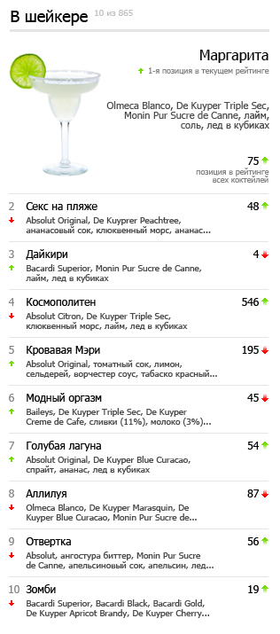

Программист на JavaScript: коктейльные рейтинги
Новый раздел очень похож на музыкальные чарты или фондовую биржу. Коктейль оценивается по популярности, то есть по количеству просмотров. Чтобы разбавить скучный рейтинг всех коктейлей, мы будем выводить самые популярные красные коктейли, безалкогольные коктейли, а также коктейли, которые просто приготовить.
Вот пример колонки из 10-и коктейлей, которые готовят в шейкере:
Стрелочка слева, рядом с номером коктейля в списке показывает его движение в тематическом рейтинге, а стрелочка справа, рядом с позицией в рейтинге всех коктейлей — прогресс в общем зачете. Всё очень просто.